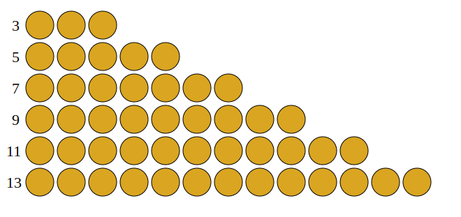
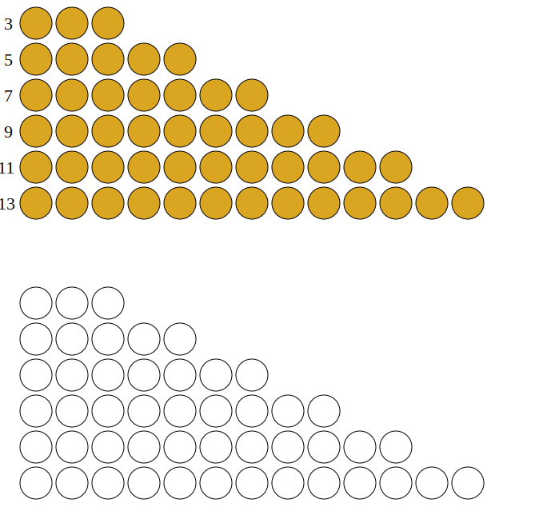
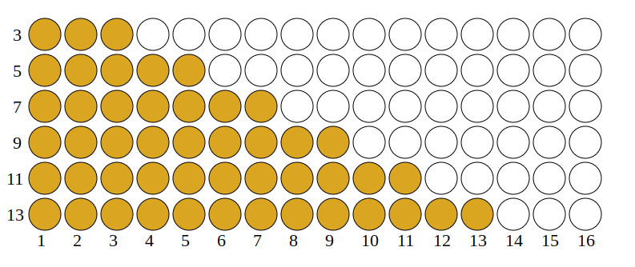

Uma Progressão Aritmética (PA) é uma série de números que começa com um número qualquer (a1) e da qual é somado um valor constante, terminando em (an).
Por exemplo, a série representada por pedrinhas abaixo começa com 3, vai somando 2 pedras (5, 7, 9, etc), até chegar em 13 pedrinhas. Qual a soma desta PA?
A figura é um trapézio.
Basta fazer um ctrl c + ctrl v, teremos dois trapézios. Girando o trapézio branco, dá para encaixar perfeitamente no trapézio preto.
Calcular área de retângulo é mole. A base deste retângulo é a soma das 13 pedras da última linha, mais as 3 da primeira (a1 + an). E a altura é o número de elementos (n). Como estou contanto duas vezes o trapézio, tem que dividir por 2: (a1+an)*n/2. CQD.
De modo mais geral, transformar alguma coisa num quadrado ou retângulo para calcular a área de modo fácil é uma “quadratura”. Fiz uma “quadratura” da soma de PAs. Há quadraturas muito criativas em geometria.
A maldição dos matemáticos gregos da antiguidade foi a “Quadratura do círculo”, ou seja, calcular a área do círculo transformando-o num quadrado ou retângulo. E isto só utilizando régua e compasso.
Veja também:
Forgotten Lore - Ideias Técnicas com uma pitada de filosofia.